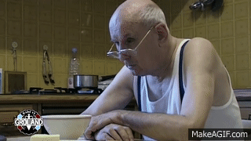

Qui suis-je ?
Futur diplômé d'un BTS SIO en spécialisation SISR et en alternance à la CAF des Landes
Télécharger mon CVInformation de contact
Nom :
Julien Mondineu
Adresse :
503 avenue de Nonères, 40000 Mont de Marsan
Téléphone :
06.74.81.96.82
Mail :
Permis :
B